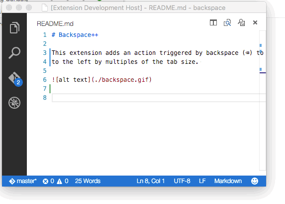
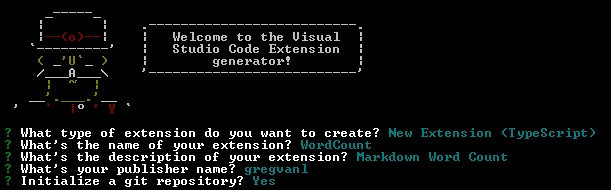
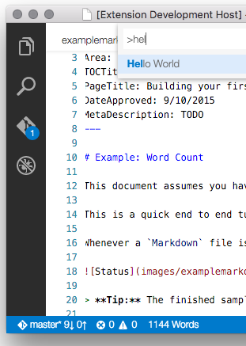
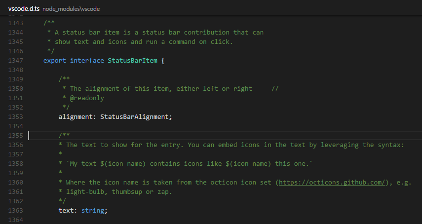
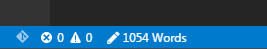

Example - Word Count
This document assumes you have read Your First Extension which covers the basics of VS Code extensibility.
Word Count is an end to end tutorial to show you how to create an extension to aid in Markdown authoring. Before we get into how all of this works, let’s have a quick demo of the core features you will be building so you know what to expect.
Whenever a Markdown file is edited, a status bar message is added. The message includes the current word count and updates as you type and move from file to file:

Tip: The finished sample is available from this GitHub repository should you have any issues.
Overview
This example has three sections which will take you through a set of related concepts:
- Update the Status Bar - display custom text in the VS Code
Status Bar - Subscribing to Events - updating the
Status Barbased on editor events - Disposing Extension Resources - release resources like event subscriptions or UI handles
First make sure you have the latest VS Code extension generator installed then run it:
|
This will open up the extension generator - we will base this example on the TypeScript New Extension option. For now, simply fill in the fields the same way you see them completed in the image below (using ‘WordCount’ as the extension name and your own name as the publisher).

You can now open VS Code as described in the generator output:
|
Run the Extension
Before we go on, we can run the extension to make sure everything works as expected by pressing F5. As you saw in the previous “Hello World” walkthrough, VS Code opens another window (the [Extension Development Host] window) in which your extension will be loaded. You should find the “Hello World” command in the Command Palette (press ⇧⌘P (Windows, Linux Ctrl+Shift+P)) and when you select it, you will see an information box at the top of the window saying “Hello World”.
Now that you have confirmed that the extension is running properly, you can keep the extension development window open if you like. To test out any changes that you make to your extension, you can either press F5 again in the development window or reload the extension development window by pressing Ctrl+R (Mac: Cmd+R).
Update the Status Bar
Replace the contents of the generated extension.ts file with the code shown below. It declares and instantiates a WordCounter class which can count words and shows them in the VS Code Status Bar. The “Hello Word” command will call updateWordCount when invoked.
|
Now let’s try our updates to the extension.
We have the compilation of the TypeScript file set on a watch (in the extension’s .vscode\tasks.json file) so there is no need to re-build. Simply hit Ctrl+R in the [Extension Development Host] window where your code is running and the extension will reload (you can also just F5 from your primary development window). We still need to activate the code in the same way as before with the “Hello World” command. Assuming you are in a Markdown file, your Status Bar will display the word count.

This is a good start but it would be cooler if the count updated as your file changed.
Subscribing to Events
Let’s hook your helper class up to a set of events.
onDidChangeTextEditorSelection- Event is raised as the cursor position changesonDidChangeActiveTextEditor- Event is raised as the active editor changes.
To do this, we’ll add a new class into the extension.ts file. It will set up subscriptions to those events and ask the WordCounter to update the word count. Also note how this class manages the subscription as Disposables and how it stops listing when being disposed itself.
Add the WordCounterController as shown below to the bottom of the extension.ts file.
|
We no longer want the Word Count extension to be loaded when a command is invoked but instead be available for each Markdown file.
First, replace the body of the activate function with this:
|
Second, we must make sure the extension is activated upon the opening of a Markdown file. To do this, we’ll need to modify the package.json file. Previously the extension was activated via the extension.sayHello command which we no longer need and so we can delete the entire contributes attribute from package.json:
|
Now change your extension so that it is activated upon the opening of a Markdown file by updating the activationEvents attribute to this:
|
The onLanguage:${language} event takes the language id, in this case “markdown”, and will be raised whenever a file of that language is opened.
Run the extension by either doing a window reload Ctrl+R or with F5 and then start editing a Markdown file. You should now should have a live updating Word Count.
If you set a breakpoint on the activate function, you’ll notice that it is only called once when the first Markdown file is opened. The WordCountController constructor runs and subscribes to the editor events so that the updateWordCount function is called as Markdown files are opened and their text changes.
Customizing the Status Bar
We’ve seen how you can display formatted text on the Status Bar. VS Code allows you to customize your Status Bar additions even further with color, icons, tooltips and more. Using IntelliSense, you can see the various StatusBarItem fields. Another great resource for learning about the VS Code extensibility APIs is the vscode.d.ts typings file included in your generated Extension project. Open node_modules\vscode\vscode.d.ts in the editor, you’ll see the complete VS Code extensibility API with comments.

Replace the StatusBarItem update code with:
|
to display a GitHub Octicon pencil icon to the left of the calculated word count.

Disposing Extension Resources
Now we’ll take a deeper look at how extensions should handle VS Code resources through Disposables.
When an extension is activated, it is passed an ExtensionContext object which has a subscriptions collection of Disposables. Extensions can add their Disposable objects to this collection and VS Code will dispose of those objects when the extension is deactivated.
Many VS Code APIs which create workspace or UI objects (e.g. registerCommand) return a Disposable and extensions can remove these elements from VS Code by calling their dispose method directly.
Events are another example where onDid* event subscriber methods return a Disposable. Extensions unsubscribe to an event by disposing the event’s Disposable. In our example, WordCountController handles the event subscription Disposables directly by keeping its own Disposable collection which it cleans up on deactivation.
|
Installing your Extension Locally
So far, the extension you have written only runs in a special instance of VS Code, the Extension Development Host instance. To make your extension available to all VS Code instances, copy the extension folder contents to a new folder under your .vscode/extensions folder.
Publishing your Extension
Read about how to Share an Extension.
Next Steps
Read on to find out about:
- Extension Generator - Learn about other options in the Yo Code extension generator.
- Extension API - Get an overview of the Extension API.
- Publishing Tool - Learn how to publish an extension to the public Marketplace.
- Editor API - Learn more about Text Documents, Text Editors and editing text.
- Additional Extension Examples - Take a look at our list of example extension projects.